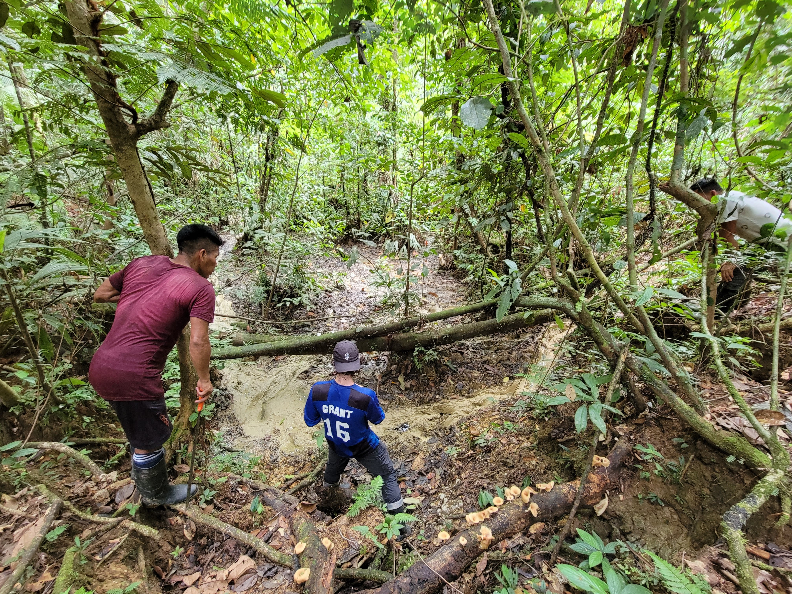

Photos
ethan
12/02/2022
For most recent photos, follow my Instagram!
- https://www.instagram.com/ethanduvall.ecology
2022
Many-banded Aracari in Sucusari, Loreto, Peru
(1/15/2022)
Birdwatching outside Iquitos (1/15/2022)

Clay lick used heavily by Tapir
(1/15/2022)

Chambira jumped right into our boat
(1/10/2022)
2021

Banding a Blackburnian Warbler, Braddock Bay
(4/29/2021)

Magnolia Warbler, Braddock Bay (4/27/2021)
cayuga Lake fishing, Ithaca, NY
(3/13/2021)
Scarlet Tanager, Braddock Bay (5/1/2021)
Lake Rosevelt, WA (7/12/2021)
Ithaca summer (8/10/2021)
2020
Yellowstone, WY, w/ Caelan (8/20/2020)

Los Barriles, MX, w/ Brown Pelican
(1/28/2020)
Black Hills NP, SD (8/26/2020)
Bison bone Yellowstone (8/29/2020)
Moab, UT w/ Lauren (7/13/2020)
Devils Tower, WY w/ Emily (9/18/2020)
Telluride CO, via ferrata Photo taken by
Lauren Duvall (7/18/2020)
Westport, WA Photo taken my Markelle
(7/10/2020)
Yellowstone, WY, w/ Caelan (9/15/2020)

Atlantic Salmon, Fall Creek, Ithaca
(10/20/2020)

Badlands NP w/ Emily (9/10/2020)
2019
Commencement speech given at Huxley College
graduation, WWU (6/18/2019)
Mt. Baker, WA Photo by Lucas Gibbons
(2/12/2019)
Dr. John McLaughlin, Grande Ronde River, OR
(4/13/2019)
River guiding on the Grande Ronde, OR
(4/13/2019)
2018 (and earlier)
North Cascades, Mt. Baker, WA (7/27/2018)
Juvenile Northern Goshawk, Hawk Watch Raptor
Banding Site, Chelan Ridge (10/13/2018)
CR w/ Luke (5/06/2016)
Enchantments, WA Photo taken my FOrrest
GOlic (7/5/2015)
Tree frog in Costa Rica (6/22/2016)
Bald Eagle on the Nooksack River, WA Photo
by my good friend Lucas Gibbons (12/12/2018)
Monteverde, CR w/ Luke (6/28/2016)

DFW Crew in the North Cascades, WA
(9/22/2018)
Tracking mountain goats w/ Randy, Darrington, WA
(9/17/2018)
North Cascades, WA w/ my good friend Forrest
(9/15/2017)
Herecium Mushroom, Central Cascades, WA
(8/6/2018)